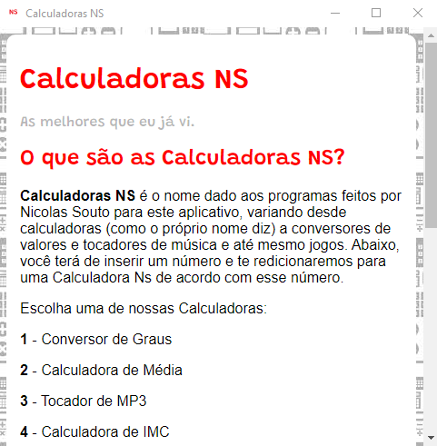

Downloads
O nosso programa está disponível em duas plataformas: Windows 10 e Android.
Android
Nosso programa é compatível também com dispositivos Android. Infelizmente não está disponível no Google Play, mas está disponível em duas lojas: Amazon Appstore (Loja disponível) e Galaxy Store (loja disponível nativamente em dispositivos Samsung). Para acessar nosso programa, clique abaixo:
Amazon appstore:
Galaxy Store:

Para o link direto, Clique aqui
Windows
O nosso programa também possui uma versão desktop, feita para computadores com Windows 10 (ainda não foi testado em outros Windows). A versão desktop está disponível através desse site. Clique aqui para baixar o programa: